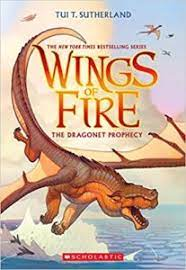

THE WORKS COMPLETE WORKS OF RABINDRANATH TAGORE
Gitanjali, The Gardener, Fruit-Gathering, The Crescent Moon, Songs of Kabir, The Home and the World, Chitra,
The King of the Dark Chamber, Sanyasi, Thought Relics, Creative Unity, Glimpses of Bengal…
Read
more
THE KALAM EFFECTS
A.P.J. Abdul Kalam was a surprise choice as the President of the country. Everyone thought about how he would
adapt to the splendour of Rashtrapati Bhawan. After all, he was not a politician but a renowned scientist.
Read More
THE BRIEF HISTORY OF TIME
Stephen Hawking's worldwide bestseller, A Brief History of Time, has been a landmark volume in scientific
writing. Its author's engaging voice is one reason, and the compelling subjects he addresses is another: the
nature of space and time, the role of God in creation, the history and future of the universe.
Read
More

WHEN BREATH BECOMES AIR
When Breath Becomes Air (2016) tells the incredible story of Paul Kalanithi, a neurosurgeon and
neuroscientist who was diagnosed with and died from cancer in his mid-thirties. These blinks detail his
extraordinary journey in search of the meaning of life in the face of death.
Read More
THE YOUNG BLOOD
Kat Finn and her mother can barely make ends meet living among humans. Like all vampires, they must drink
Hema, an expensive synthetic blood substitute, to survive, as nearly all of humanity has been infected by a
virus that's fatal to vampires.
Read
More

THE WINGS OF FIRE
Wings of Fire (1999), is the autobiography of the Missile Man of India and President of India, Dr. A. P. J.
Abdul Kalam. It was written by him and Arun Tiwari.In the autobiography, Kalam examines his early life, effort, hardship, fortitude, luck and chance that
eventually led him to lead Indian space research, nuclear and missile programs.
Read More